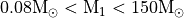
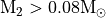
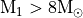

Generate a binary population by hand¶
The process to generate a synthetic binary population, is similar to the process to evolve a single/multiple binaries by hand: first generate an initial population, then evolve it with the Evolve class.
An initialized binary population consists of a collection of binary systems with assigned primary and secondary masses, orbital periods, eccentricities, metallicities, and star formation histories. These parameters are randomly sampled from observationally motivated distribution functions.
In COSMIC, the initial sample is done through an initial binary sampler which works with the InitialBinaryTable class. There are two samplers available:
1. independent : initialize binaries with independent parameter distributions for the primary mass, mass ratio, eccentricity, separation, and binary fraction
2. multidim : initialize binaries with multidimensional parameter distributions according to Moe & Di Stefano 2017
We consider both cases below.
independent¶
First import the InitialBinaryTable class and the independent sampler
In [1]: from cosmic.sample.initialbinarytable import InitialBinaryTable
In [2]: from cosmic.sample.sampler import independent
The independent sampler contains multiple models for each binary parameter. You can access the available models using the independent sampler help call:
In [3]: help(independent.get_independent_sampler)
Help on function get_independent_sampler in module cosmic.sample.sampler.independent:
get_independent_sampler(final_kstar1, final_kstar2, primary_model, ecc_model, porb_model, SF_start, SF_duration, binfrac_model, met, size, **kwargs)
Generates an initial binary sample according to user specified models
Parameters
----------
final_kstar1 : `int or list`
Int or list of final kstar1
final_kstar2 : `int or list`
Int or list of final kstar2
primary_model : `str`
Model to sample primary mass; choices include: kroupa93, kroupa01, salpeter55
ecc_model : `str`
Model to sample eccentricity; choices include: thermal, uniform, sana12
porb_model : `str`
Model to sample orbital period; choices include: log_uniform, sana12
SF_start : `float`
Time in the past when star formation initiates in Myr
SF_duration : `float`
Duration of constant star formation beginning from SF_Start in Myr
binfrac_model : `str or float`
Model for binary fraction; choices include: vanHaaften or a fraction where 1.0 is 100% binaries
met : `float`
Sets the metallicity of the binary population where solar metallicity is 0.02
size : `int`
Size of the population to sample
Returns
-------
InitialBinaryTable : `pandas.DataFrame`
DataFrame in the format of the InitialBinaryTable
mass_singles : `float`
Total mass in single stars needed to generate population
mass_binaries : `float`
Total mass in binaries needed to generate population
n_singles : `int`
Number of single stars needed to generate a population
n_binaries : `int`
Number of binaries needed to generate a population
The final_kstar1 and final_kstar2 parameters are lists that contain the kstar types that you would like the final population to contain.
The final kstar is the final state of the binary system we are interested in and is based on the BSE kstar naming convention, see Evolutionary State of the Star for more information.
Thus, if you want to generate a population containing double white dwarfs with CO and ONe WD primaries and He-WD secondaries, the final kstar inputs would be:
In [4]: final_kstar1 = [11, 12]
In [5]: final_kstar2 = [10]
Similar to the help for the sampler, the different models that can be used for each parameter to be sampled can be accessed by the help function for the argument. The syntax for each parameter sample is always: sample_`parameter`. See the example for the star formation history (SFH) below:
In [6]: help(independent.Sample.sample_SFH)
Help on function sample_SFH in module cosmic.sample.sampler.independent:
sample_SFH(self, SF_start=13700.0, SF_duration=0.0, met=0.02, size=None)
Sample an evolution time for each binary based on a user-specified
time at the start of star formation and the duration of star formation.
The default is a burst of star formation 13,700 Myr in the past.
Parameters
----------
SF_start : float
Time in the past when star formation initiates in Myr
SF_duration : float
Duration of constant star formation beginning from SF_Start in Myr
met : float
metallicity of the population [Z_sun = 0.02]
Default: 0.02
size : int, optional
number of evolution times to sample
NOTE: this is set in cosmic-pop call as Nstep
Returns
-------
tphys : array
array of evolution times of size=size
metallicity : array
array of metallicities
Using the final kstar inputs above, the initial binary population is sampled as:
In [7]: InitialBinaries, mass_singles, mass_binaries, n_singles, n_binaries = InitialBinaryTable.sampler('independent', final_kstar1, final_kstar2, binfrac_model=0.5, primary_model='kroupa01', ecc_model='sana12', porb_model='sana12', SF_start=13700.0, SF_duration=0.0, met=0.02, size=10000)
In [8]: print(InitialBinaries)
kstar_1 kstar_2 mass_1 mass_2 porb ecc metallicity tphysf ... epoch_1 epoch_2 tms_1 tms_2 bhspin_1 bhspin_2 tphys binfrac
0 1.0 1.0 0.877069 0.784652 1052.126265 0.001587 0.02 13700.0 ... 0.0 0.0 0.0 0.0 0.0 0.0 0.0 0.5
1 1.0 0.0 0.843908 0.666603 65.517191 0.017823 0.02 13700.0 ... 0.0 0.0 0.0 0.0 0.0 0.0 0.0 0.5
2 1.0 1.0 1.622439 1.015034 4.732781 0.409041 0.02 13700.0 ... 0.0 0.0 0.0 0.0 0.0 0.0 0.0 0.5
3 1.0 1.0 3.879773 3.778246 35.898711 0.023957 0.02 13700.0 ... 0.0 0.0 0.0 0.0 0.0 0.0 0.0 0.5
4 1.0 1.0 1.552325 0.864780 7.796751 0.218405 0.02 13700.0 ... 0.0 0.0 0.0 0.0 0.0 0.0 0.0 0.5
... ... ... ... ... ... ... ... ... ... ... ... ... ... ... ... ... ...
10098 1.0 1.0 9.590471 5.733345 29598.637770 0.194498 0.02 13700.0 ... 0.0 0.0 0.0 0.0 0.0 0.0 0.0 0.5
10099 1.0 1.0 1.569780 0.944479 225.624391 0.404016 0.02 13700.0 ... 0.0 0.0 0.0 0.0 0.0 0.0 0.0 0.5
10100 1.0 1.0 3.058665 2.061208 129.059130 0.064512 0.02 13700.0 ... 0.0 0.0 0.0 0.0 0.0 0.0 0.0 0.5
10101 1.0 1.0 2.722729 2.672297 9.394151 0.413622 0.02 13700.0 ... 0.0 0.0 0.0 0.0 0.0 0.0 0.0 0.5
10102 1.0 1.0 2.925943 2.139549 1.752555 0.042039 0.02 13700.0 ... 0.0 0.0 0.0 0.0 0.0 0.0 0.0 0.5
[10103 rows x 38 columns]
NOTE: the length of the initial binary data set, InitialBinaries, does not always match the size parameter provided to InitialBinaryTable.sampler. This is becuase the sampler accounts for a binary fraction specified by the user with the binfrac_model parameter, which is either a fraction between 0 and 1 or mass dependend following the prescription in van Haaften+2013.
Since we are interested in binaries, we only retain the binary systems that are likely to produce the user specified final kstar types. However, we also keep track of the total mass of the single and binary stars as well as the numbre of binary and single stars so that we can scale our results to larger populations. If you don’t want to filter the binaries, you can supply final kstars as
(Source code, png, hires.png, pdf)
{kind=link}
{kind=link}

For the entirety of the mass range: , the mass ratio looks not uniform. This is entirely due to the lower limit of . If we filter on massive stars (), then the mass ratio is totally flat:
(Source code, png, hires.png, pdf)
{kind=link}
{kind=link}

multidim¶
COSMIC implements multidimensionally distributed initial binaries according to Moe & Di Stefano 2017. The python code used in COSMIC to create this sample was written by Mads Sorenson, and is based on the IDL codes written to accompany Moe & Di Stefano 2017.
The multidimensional initial binary data is sampled in COSMIC as follows:
In [9]: from cosmic.sample.initialbinarytable import InitialBinaryTable
In [10]: from cosmic.sample.sampler import multidim
To see the arguments necessary to call the multidimensional sampler use the help function:
In [11]: help(multidim.get_multidim_sampler)
Help on function get_multidim_sampler in module cosmic.sample.sampler.multidim:
get_multidim_sampler(final_kstar1, final_kstar2, rand_seed, nproc, SF_start, SF_duration, met, size, **kwargs)
adapted version of Maxwell Moe's IDL code that generates a population of single and binary stars
Below is the adapted version of Maxwell Moe's IDL code
that generates a population of single and binary stars
based on the paper Mind your P's and Q's
By Maxwell Moe and Rosanne Di Stefano
The python code has been adopted by Mads Sørensen
Version history:
V. 0.1; 2017/02/03
By Mads Sørensen
- This is a pure adaption from IDL to Python.
- The function idl_tabulate is similar to
the IDL function int_tabulated except, this function seems to be slightly
more exact in its solution.
Therefore, relative to the IDL code, there are small numerical differences.
Comments below beginning with ; is the original nodes by Maxwell Moe.
Please read these careful for understanding the script.
; NOTE - This version produces only the statistical distributions of
; single stars, binaries, and inner binaries in hierarchical triples.
; Outer tertiaries in hierarchical triples are NOT generated.
; Moreover, given a set of companions, all with period P to
; primary mass M1, this version currently uses an approximation to
; determine the fraction of those companions that are inner binaries
; vs. outer triples. Nevertheless, this approximation reproduces
; the overall multiplicity statistics.
; Step 1 - Tabulate probably density functions of periods,
; mass ratios, and eccentricities based on
; analytic fits to corrected binary star populations.
; Step 2 - Implement Monte Carlo method to generate stellar
; population from those density functions.
Parameters
----------
final_kstar1 : `list` or `int`
Int or list of final kstar1
final_kstar2 : `list` or `int`
Int or list of final kstar2
rand_seed : `int`
Int to seed random number generator
nproc : `int`
Number of processors to use to generate population
SF_start : `float`
Time in the past when star formation initiates in Myr
SF_duration : `float`
Duration of constant star formation beginning from SF_Start in Myr
met : `float`
Sets the metallicity of the binary population where solar metallicity is 0.02
size : `int`
Size of the population to sample
**porb_lo : `float`
Lower limit in days for the orbital period distribution
**porb_hi: `float`
Upper limit in days for the orbital period distribution
Returns
-------
InitialBinaryTable : `pandas.DataFrame`
DataFrame in the format of the InitialBinaryTable
mass_singles : `float`
Total mass in single stars needed to generate population
mass_binaries : `float`
Total mass in binaries needed to generate population
n_singles : `int`
Number of single stars needed to generate a population
n_binaries : `int`
Number of binaries needed to generate a population
The random seed is used to reproduce your initial sample, since there are several stochastic processes involved in the muldimensional sample. As in the independent sampler, the final_kstar1 and final_kstar2 inputs are lists containing the kstar types that the evolved population should contain.
The multidimensional sample is generated as follows:
In [12]: InitialBinaries, mass_singles, mass_binaries, n_singles, n_binaries = InitialBinaryTable.sampler('multidim', final_kstar1=[11], final_kstar2=[11], rand_seed=2, nproc=1, SF_start=13700.0, SF_duration=0.0, met=0.02, size=10)
In [13]: print(InitialBinaries)
kstar_1 kstar_2 mass_1 mass_2 porb ecc metallicity tphysf ... epoch_1 epoch_2 tms_1 tms_2 bhspin_1 bhspin_2 tphys binfrac
0 1.0 1.0 3.686712 0.806328 161026.959409 0.829034 0.02 13700.0 ... 0.0 0.0 0.0 0.0 0.0 0.0 0.0 0.614692
1 1.0 1.0 0.974390 0.881366 25.334034 0.126290 0.02 13700.0 ... 0.0 0.0 0.0 0.0 0.0 0.0 0.0 0.406506
2 1.0 1.0 2.479799 0.831304 60.621679 0.545004 0.02 13700.0 ... 0.0 0.0 0.0 0.0 0.0 0.0 0.0 0.528636
3 1.0 1.0 1.125074 0.976918 29228.830150 0.713424 0.02 13700.0 ... 0.0 0.0 0.0 0.0 0.0 0.0 0.0 0.411491
4 1.0 1.0 5.805987 3.358740 118.636803 0.718332 0.02 13700.0 ... 0.0 0.0 0.0 0.0 0.0 0.0 0.0 0.795156
5 1.0 1.0 15.916263 6.395108 15884.228362 0.727113 0.02 13700.0 ... 0.0 0.0 0.0 0.0 0.0 0.0 0.0 0.895210
6 1.0 1.0 1.710108 1.069395 55655.129136 0.900815 0.02 13700.0 ... 0.0 0.0 0.0 0.0 0.0 0.0 0.0 0.459633
7 1.0 1.0 2.401816 1.261706 189.173552 0.264586 0.02 13700.0 ... 0.0 0.0 0.0 0.0 0.0 0.0 0.0 0.521047
8 1.0 1.0 2.892138 0.988218 179.329874 0.085426 0.02 13700.0 ... 0.0 0.0 0.0 0.0 0.0 0.0 0.0 0.560256
9 1.0 1.0 2.433570 2.134182 14727.306379 0.261487 0.02 13700.0 ... 0.0 0.0 0.0 0.0 0.0 0.0 0.0 0.521047
[10 rows x 38 columns]
Note
NOTE that in the multidimensional case, the binary fraction is a parameter in the sample. This results in the size of the initial binary data matching the size provided to the sampler. As in the independent sampling case, we keep track of the total sampled mass of singles and binaries as well as the total number of single and binary stars to scale thesimulated population to astrophysical populations.
Evolving an initial binary population¶
As in Using COSMIC to evolve binaries, once an initial binary population is sampled, it is evolved using the Evolve class. Note that the same process used in Using COSMIC to evolve binaries applies here as well: the BSEDict must be supplied, but only need be resupplied if the flags in the dictionary change.
The syntax for the Evolve class is as follows:
In [14]: from cosmic.evolve import Evolve
In [15]: BSEDict = {'xi': 1.0, 'bhflag': 1, 'neta': 0.5, 'windflag': 3, 'wdflag': 1, 'alpha1': 1.0, 'pts1': 0.001, 'pts3': 0.02, 'pts2': 0.01, 'epsnov': 0.001, 'hewind': 0.5, 'ck': 1000, 'bwind': 0.0, 'lambdaf': 0.5, 'mxns': 2.5, 'beta': 0.125, 'tflag': 1, 'acc2': 1.5, 'remnantflag': 3, 'ceflag': 0, 'eddfac': 1.0, 'ifflag': 0, 'bconst': 3000, 'sigma': 265.0, 'gamma': -1.0, 'pisn': 45.0, 'natal_kick_array' : [[-100.0,-100.0,-100.0,-100.0,0.0], [-100.0,-100.0,-100.0,-100.0,0.0]], 'bhsigmafrac' : 1.0, 'polar_kick_angle' : 90, 'qcrit_array' : [0.0,0.0,0.0,0.0,0.0,0.0,0.0,0.0,0.0,0.0,0.0,0.0,0.0,0.0,0.0,0.0], 'cekickflag' : 2, 'cehestarflag' : 0, 'cemergeflag' : 0, 'ecsn' : 2.5, 'ecsn_mlow' : 1.4, 'aic' : 1, 'ussn' : 0, 'sigmadiv' :-20.0, 'qcflag' : 2, 'eddlimflag' : 0, 'fprimc_array' : [2.0/21.0,2.0/21.0,2.0/21.0,2.0/21.0,2.0/21.0,2.0/21.0,2.0/21.0,2.0/21.0,2.0/21.0,2.0/21.0,2.0/21.0,2.0/21.0,2.0/21.0,2.0/21.0,2.0/21.0,2.0/21.0], 'bhspinflag' : 0, 'bhspinmag' : 0.0, 'rejuv_fac' : 1.0, 'rejuvflag' : 0, 'htpmb' : 1, 'ST_cr' : 1, 'ST_tide' : 0, 'bdecayfac' : 1, 'rembar_massloss' : 0.5, 'zsun' : 0.017}
In [16]: bpp, bcm, initC, kick_info = Evolve.evolve(initialbinarytable=InitialBinaries, BSEDict=BSEDict)
In [17]: print(bcm.iloc[:10])
tphys kstar_1 mass0_1 mass_1 lum_1 rad_1 teff_1 massc_1 ... ecc B0_1 B0_2 SN_1 SN_2 bin_state merger_type bin_num
0 0.0 1.0 3.686712 3.686712 170.158517 2.271549 13893.830089 0.000000 ... 0.829034 0.0 0.0 0.0 0.0 0 -001 0
0 13700.0 11.0 0.820660 0.820660 0.000003 0.010074 2434.409432 0.820660 ... 0.825710 0.0 0.0 0.0 0.0 0 -001 0
1 0.0 1.0 0.974390 0.974390 0.574837 0.861434 5439.323326 0.000000 ... 0.126290 0.0 0.0 0.0 0.0 0 -001 1
1 13700.0 3.0 0.973856 0.973419 3.757201 2.988839 4669.113823 0.158206 ... 0.102990 0.0 0.0 0.0 0.0 0 -001 1
2 0.0 1.0 2.479799 2.479799 36.588755 1.827975 10546.817930 0.000000 ... 0.545004 0.0 0.0 0.0 0.0 0 -001 2
2 13700.0 11.0 0.644819 0.644819 0.000003 0.012188 2234.029208 0.644819 ... -1.000000 0.0 0.0 0.0 0.0 1 0301 2
3 0.0 1.0 1.125074 1.125074 1.153625 1.033287 5911.194782 0.000000 ... 0.713424 0.0 0.0 0.0 0.0 0 -001 3
3 13700.0 11.0 0.518381 0.518381 0.000051 0.013943 4158.600973 0.518381 ... 0.702130 0.0 0.0 0.0 0.0 0 -001 3
4 0.0 1.0 5.805987 5.805987 889.907592 2.940122 18468.140126 0.000000 ... 0.718332 0.0 0.0 0.0 0.0 0 -001 4
4 13700.0 15.0 0.967389 0.000000 0.021202 0.006710 27009.611636 1.116906 ... -1.000000 0.0 0.0 0.0 0.0 0 -001 4
[10 rows x 39 columns]
In [18]: print(bpp)
tphys mass_1 mass_2 kstar_1 kstar_2 sep porb ecc ... bacc_2 tacc_1 tacc_2 epoch_1 epoch_2 bhspin_1 bhspin_2 bin_num
0 0.000000 3.686712 0.806328 1.0 1.0 20546.178672 161026.959409 0.829034 ... 0.0 0.0 0.0 0.000000 0.000000e+00 0.0 0.0 0
0 223.544958 3.685928 0.806328 2.0 1.0 20549.767309 161083.214908 0.829034 ... 0.0 0.0 0.0 -0.042939 6.391417e-09 0.0 0.0 0
0 224.677852 3.685682 0.806328 3.0 1.0 20550.892105 161100.849308 0.829034 ... 0.0 0.0 0.0 -0.081628 1.599782e-07 0.0 0.0 0
0 225.703810 3.684407 0.806328 4.0 1.0 20556.725803 161192.328394 0.829034 ... 0.0 0.0 0.0 -0.081628 9.075428e-06 0.0 0.0 0
0 269.945613 3.647571 0.806328 5.0 1.0 20726.726881 163869.467729 0.829034 ... 0.0 0.0 0.0 -0.081628 1.985639e-04 0.0 0.0 0
.. ... ... ... ... ... ... ... ... ... ... ... ... ... ... ... ... ...
9 985.380600 0.657528 2.305857 11.0 4.0 5463.751787 27190.336043 0.235782 ... 0.0 0.0 0.0 882.892845 1.760456e+02 0.0 0.0 9
9 1196.370601 0.657528 2.280053 11.0 5.0 5511.744656 27670.108814 0.235781 ... 0.0 0.0 0.0 882.892845 1.760456e+02 0.0 0.0 9
9 1200.724817 0.657543 2.253262 11.0 6.0 5562.197016 28179.622595 0.235778 ... 0.0 0.0 0.0 882.892845 1.760456e+02 0.0 0.0 9
9 1201.895900 0.667546 0.631034 11.0 11.0 12143.132022 136092.418026 0.232686 ... 0.0 0.0 0.0 882.892845 1.201896e+03 0.0 0.0 9
9 13700.000000 0.667546 0.631034 11.0 11.0 12143.132022 136092.418038 0.232686 ... 0.0 0.0 0.0 882.892845 1.201896e+03 0.0 0.0 9
[140 rows x 42 columns]